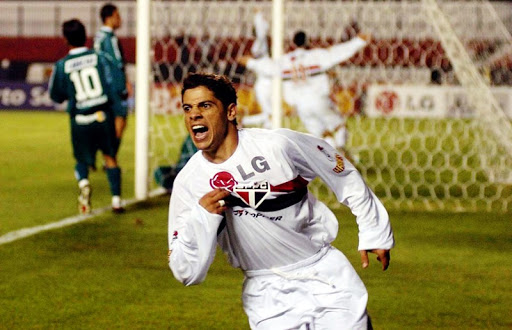
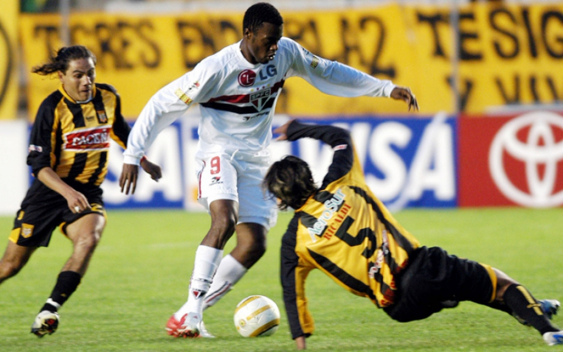
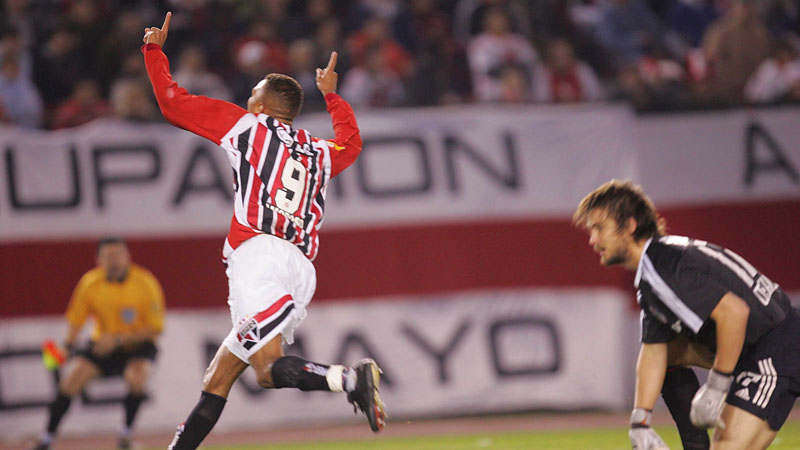
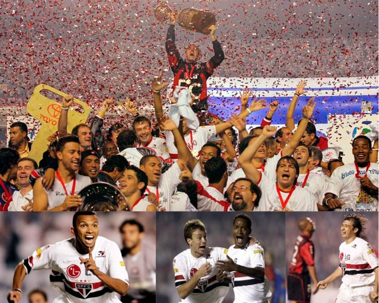

Em 2005, o São Paulo Futebol clube conquistou o sonho do tri da américa, o que até então era um feito inédito para os clubes brasileiros.
Essa história começa em 2004, com o campeonato brasileiro, onde o tricolor conquistou a vaga ao terminar a competição na terceira colocação, o que garantiu o clube na fase de grupos da libertadores do ano seguinte.
Na fase de grupos, o tricolor passou por Universidad de Chile, Quilmes e The Strongest. Sem nenhuma derrota, e com 3 vitórias e 3 empates o tricolor paulista avançou para a fase de oitavas de final.
Nas fases seguintes o tricolor passou por grandes desafios. Eliminou o rival Palmeiras (mais um capítulo na freguesia alviverde em mata-matas), eliminou o Tigres-MEX, e, no maior confronto daquela libertadores, passou pelo River Plate na semifinal, onde Amoroso sacramentou seu lugar no panteão de ídolos sãopaulinos.
Na grande final o São Paulo enfrentou outro brasileiro, o Atlético-PR. Primeiro jogo difícil, empate em 1x1 e a grande final ficou em aberto para o jogo de volta no Morumbi.
No jogo de volta, baile tricolor. 4x1 com autoridade e sacramentando o tri campeonato da américa, que pra sempre estará no coração tricolor e na história vitoriosa do clube.